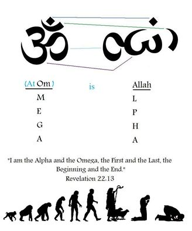

"When meditation is mastered, the mind is unwavering like the flame of a lamp in a windless place." – Bhagavad Gita 6.19

The Arabian Peninsula, today revered as the birthplace and spiritual heart of Islam, is home to the fastest-growing religion in the world - a faith that prevails steadfastly upon the tenets of strict monotheism (tawhid), which asserts the absolute oneness of God. Central to Islamic doctrine is an unequivocal rejection of idolatry (shirk), the worship of any being or object alongside or in place of Allah, which is considered the gravest sin in Islam.
It would simply be beyond belief that this very land was once a cradle of ancient cultures that adorned shrines with tribal deities and a hallowed site where many gods and goddesses were revered through the medium of Mother Nature.
Long before the adhan (the Islamic call to prayer) that reverberated across the desert sands, there was a multitude of other traditions whose voice was drowned amidst the stentorian roar of the Islamic Caliphate but their faint echoes can still be traced in the wide-reaching Islamic nasheeds sung in mosques, the intricate geometric artwork of Qasrs[1] and Qubbas[2], rituals surrounding the holy Zamzam well and the legacy of the anachronistic pantheon of Ancient Mecca, even in the stories and sermons delivered in Minbars[3] and festivals observed by Muslims worldwide.
As Islam emerged and rapidly expanded beyond the confines of the Arabian Peninsula, it carried with it not only the revelatory platitudes and aphorisms of the Quran but also absorbed, adapted, and, at times, repurposed vestiges of pre-Islamic traditions that were subtly harmonised and integrated within the Islamic framework. While Islam sought to distinguish itself from the polytheistic past and other incongruous praxes, certain customs, symbols and practices were too deeply instilled in the social fabric or were too obdurate to be entirely evanesced. The influence of Persian and Indian thought permeated Islamic philosophy, shaping theological debates and mystical traditions such as Sufism, which bears striking parallels to Vedantic and Zoroastrian spirituality. The irradiation of these precepts and paradigms was driven by a confluence of factors: trade routes that connected Arabia to Persia, India and the Mediterranean; the military campaigns of early empires; and the cultural exchanges that effloresced in the melting pots of newly conquered lands.
Prior to the advent of Islam, the landscape of Pre-Islamic Arabia was sculpted by shades of fetishism, sacrificial rites and astral worship of gods and goddesses tied to natural forces, celestial, anthropomorphic bodies, ancestral spirits of tribes and to the souls of the Arabs. The Arabic scholar of customs, Hishām ibn al-Kalbī[4], notes in his treatise "The Book of Idols" (Kitāb al-Aṣnām), "Every household had an idol in their house which they used to worship. When a man was about to set out on a journey he would rub himself against it as he was about to ride off: indeed that was the last thing he used to do before his journey; and when he returned from his journey the first thing he did was to rub himself against it before he went in to his family."[5]
Since time immemorial, these conceptions were not sequestered but prevalent across Persia, the Mediterranean and India and were further proliferated by the expanse of empires like those of Persia, Alexander and Rome that united peoples of diverse backgrounds under one common banner and ensured contact with far-flung lands that gave rise to intellectual ferment for discourse. For millennia, the Indus Valley Civilisation or Sarasvati-Sindhu Civilisation has been the foremost trader with Mesopotamia and the Mediterranean world[6]. We can find Indian Yakshi[7]figurines preserved in the ashes of Pompeii, mosaics of Krishna[8] in Greece, reported Ganesha[9] idols in Kuwait as well as hordes of Roman coins along the coast of India and Hellenistic coins of Bactrian Greeks near Kabul.
Arabia’s situation between Greece on its West and India on its East served as the primary conduit for the transmission of recherché erudition from the outside world into the Arabian subcontinent and from Arabia into the outside world. These interactions facilitated the spread of Hinduism and Buddhism into the Persian Empire, introduced Middle Eastern cults such as that of Mithras into Rome, and enabled the veneration of deities like Isis to flourish across the Mediterranean.[10]
The nucleus of the pre-Islamic Arabian subcontinent was none other than the very cubic sanctuary encased in black stone and nestled within the arid expanse of Mecca before which billions of Muslims genuflect in devotion today - the Kaaba. Long before it became the Qibla (the direction of prayer) for the Islamic world, the Kaaba stood as the spiritual and cultural capital of pre-Islamic Arabia, enshrining within its consecrated walls the collective reverence of a polytheistic people. It was not merely a house of worship but a naos of gods, a cosmogonic threshold between the mortal and the divine, a place where the aspirations, fears and supplications of promiscuous tribes united beneath its shadow[11].
Its quintessence was the Hajar al-Aswad, the Black Stone, an enigmatic relic embedded within the eastern corner of the Kaaba. Believed by some traditions to have fallen from the empyrean realms, it was revered even in pre-Islamic times as a tangible link between the terrestrial and the divine. Worshippers would touch, kiss and circumambulate the Kaaba in rituals that eerily prefigured those later sanctified by Islam. Sevenfold circumambulation (Tawaf) - a ritual that remains integral to the Hajj pilgrimage - was performed by the ancient Arabs, though it was often accompanied by idol adulation and offerings to the deities housed within the bema[12] or people grovelling obsequiously before the structure. Rituals such as circumambulation do not prevail around any other Islamic structures, such as mosques, except the Kaaba and have been conscientiously upheld by Hindus to this day around temples, deities and fires by the name of Parikrama or Pradakshina[13].
The Kaaba once housed 360 idols, symbolising the days of the year, alongside major deities like the trinity of Al-Lat, Al-Uzza, and Manat, all of whom were destroyed by Prophet Muhammad to establish Allah, already the supreme deity of the Quraysh, as the sole God. The most revered of these idols was Hubal, an Elysian figure adorned with the crescent moon[14], embodying the cosmic order. Carved from opalescent stone[15], red agate, or cornelian pearl, his gleaming form radiated an aura of divine majesty. He was believed to hold the sacred waters of Zamzam[16], reigning as the arbiter of fate within the incense-filled sanctum of the Kaaba[17].
Muslims to this day hold the crescent moon and star sacred, as well as the Zamzam. However, now, Zamzam is connected to Hagar and Ishmael, and the Kaaba to Abraham, but these were not the beliefs of the peoples of pre-Islamic Arabia. Rather, they reflect an effort or a contrivance to fit the old customs of many people into the framework of Islam so more could adopt the religion[18].
The sacred crescent Moon of Hubal and the holy Zamzam, which he carries, are identical to Shiva’s Chandra and the Ganga that flows from his matted locks like a beatific river of grace, nourishing and purifying all those who are blessed to take shelter under the silken thread of life itself. Just as a handful of Hindu schools worshipped a 33-deity ensemble, people in Asia Minor commonly offered their respectful obeisances unto 33 gods and goddesses[19] before the spread of Islam. Al-Lat, Al-Uzza and Manat once again seem homologous to the Hindu trinity of Saraswati, Parvati and Lakshmi, representing the goddesses of wisdom, love and wealth, respectively[20].
We can even find Gods like Brahma on the cover of a 13th-century Persian book by Abu Jafar Muhammad Nasir al-Din al-Tusi (1201-1274) and the presence of Saraswati idols across pre-Islamic Arabia.
Islamic festivals like the Gyrahvi Sharif are non-different from Ekadashi, both meaning the eleventh day (‘gyrah’=11). The Islamic month Rabi is a vitiated form of the Hindu month of Ravi as the Sanskrit ‘v’ changes to ‘b’ in Prakrit. The Islamic festival of Bakra Eid seems analogous to the Vedic sacrifices like Ashvamedh where horses were killed and sacrificed to the Gods, whereas in Islam, the feasting of lamb (bakra means lamb) on Bakra Eid occurs when the Sun enters Aries, and at this time, the Hindu Zodiac is Mesh or lamb. The Muslim festival Shab-e-Barat is akin to the festival of Shivratri, which takes place on nearby dates every year and shares proximate links. The Muslim custom of breaking fast only after the moon rises also arises from Hindu traditions of Sankranti and Vinayak Chaturthi. Barah Vafat is another festival in Islam that observes the death of those in battle, which is again sympathetic to the Sanskrit word for death - ‘phiphaut’ and from the tradition of Chayal Chaturdashi[21].
Looking at more linguistic relationships of lexes, Mecca is evocative of Makkeshwara, one of the 1008 names of Shiva and Kaaba, which is also reminiscent of Kabali, another name for Shiv. Kaaba may also be congruous with the word ‘Garbha’, signifying the sanctuary of a temple. The Black Stone of Mecca could also be inspired by a Shiva Lingam and is called Al-Hajar Al-Aswad, much like Sanghey Ashweta, meaning non-white stone. Arabia is also like the Sanskrit word Arva, meaning horse and Arvasthan, meaning ‘land of the horses’, which Arabia is well-known for. ‘Allah’ is also a word in the Sanskrit language, meaning Durga or the mother Goddess. Allah written in Arabic can also be roughly formed to the Om symbol[22].
Analysing numbers and symbols in greater detail, we pick up on 786. The Islamic number 786 is conceived as holy as the first verse of the Quran is: ‘Bismillah al-Rahman al-Rahim’. The Abjad method is where each letter is given a numerical value and the total sum of the first verse, while using the Abjad order. The number is used in many places, such as on storefronts or at the top of letters. Although this is not as widely used by Muslims all around the world, it is prevalent among Indian and Pakistani Muslims. The number system we use today is commonly called the Arabic numeral system, although it actually originated in India as the Hindu numeral system[23]. If one writes 786 in Hindu numerals, it would be:

This can be rearranged to:

This would be identical to the Hindu symbol Om when flipped:

786 is also a holy number in Hinduism, symbolising the sacred trifecta of Brahma, Vishnu and Shiva and the layers of existence which include the Heaven, the Earth and the Underworld .
While a lot of these connections are admittedly speculative or even heuristic, I believe that this much similarity cannot be a coincidence and there is underlying historical or cultural exchange that perturbed the development of these traditions. Trade routes, political alliances and shared geographical landscapes acted as the cleavage between the emanation of ideas, rituals and symbols across civilisations. The Arabian Peninsula, strategically positioned at the crossroads of Africa, Asia and Europe, served as a vibrant melting pot of cultural interactions, expediting the flow of knowledge, religious beliefs and artistic expressions. Merchants, pilgrims and scholars travelled along these réseaux, carrying with them stories, philosophies and theology that transcended borders and coalesced with local customs.
Pre-Islamic religious practices and cultural elements were not entirely obliterated but were instead recontextualised within the emerging Islamic framework. In the process of Islam’s rapid expansion, cultural integration was both a necessity and an inevitability, as newly converted communities brought their own traditions and prospects into the fold. Rather than rejecting all that preceded it, Islam demonstrated remarkable adaptability, selectively assimilating and reinterpreting existing customs, thereby creating a cohesive yet richly layered religious identity. The continued reverence for sites such as the Kaaba and rituals like the Hajj pilgrimage emphasise this synthesis of ancient and new.
This labyrinthine conflation of old and new reflects the dynamic nature of cultural evolution, where traditions adapt and transform while maintaining traces of their ancestral roots. It also illustrates the inherent human tendency to seek continuity in spirituality, even as religious landscapes shift. By tracing these ties, we are not merely mapping historical transitions but are uncovering the deeper, universal human quest for meaning and to reach the zenith of our evolutionary cycle. Therefore, exploring these bonds not only enriches our understanding of Islam’s historical context but also offers a more nuanced perspective on the progression and metamorphosis of spirituality. It invites us to reconsider the narrative of religious development as a linear progression, encouraging a more holistic view of spiritual heritage as a conflux of miscellaneous influences that shape human consciousness across epochs.
"When meditation is mastered, the mind is unwavering like the flame of a lamp in a windless place." – Bhagavad Gita 6.19

Sanatana Dharma and Jewish Mysticism (Kabbalah)

Did you know that Saraswati is worshipped in Japan as Benzaiten?
For any queries or meaningful conversations, feel free to reach out to me via email.